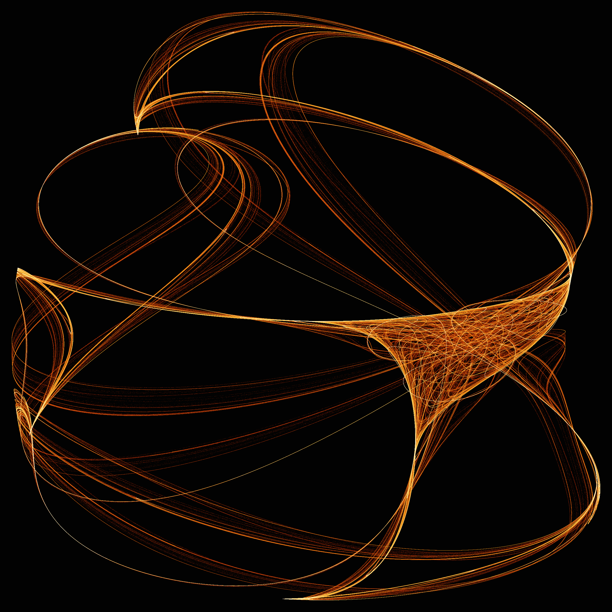
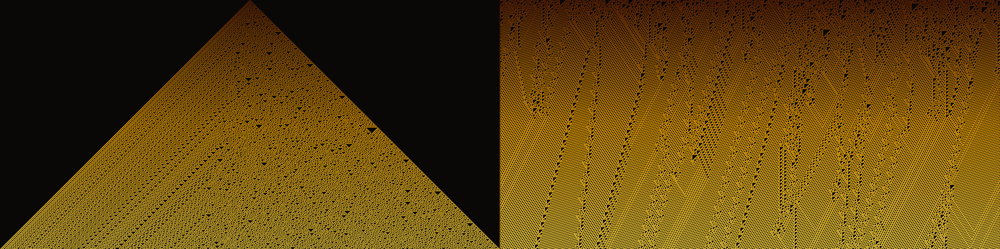
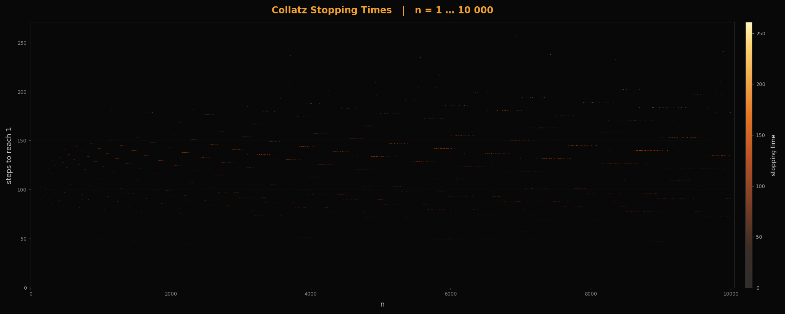
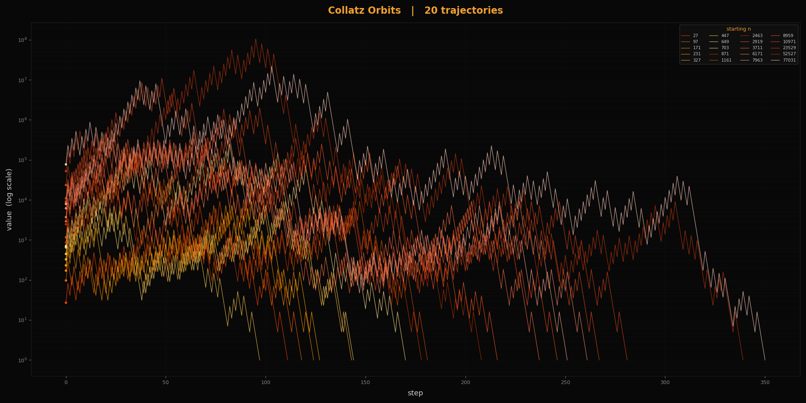
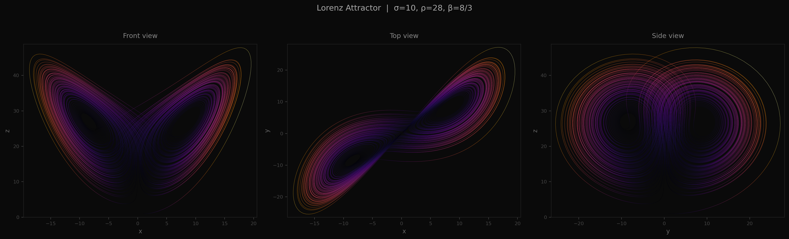
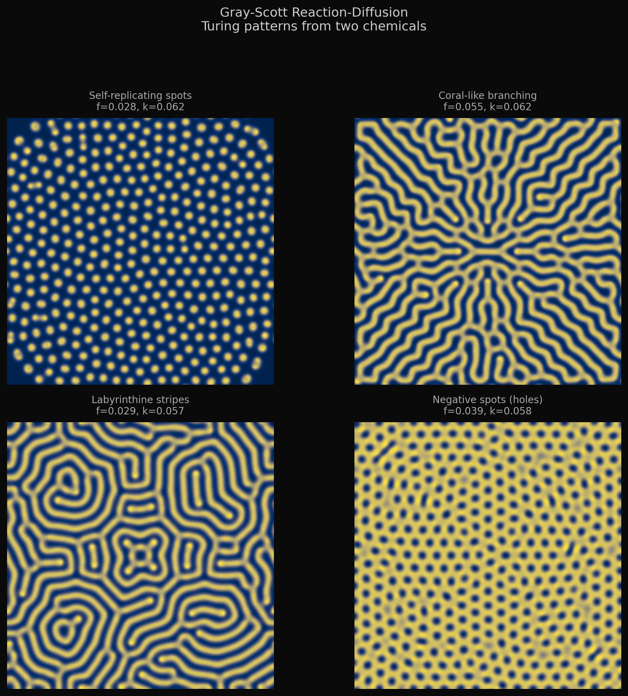
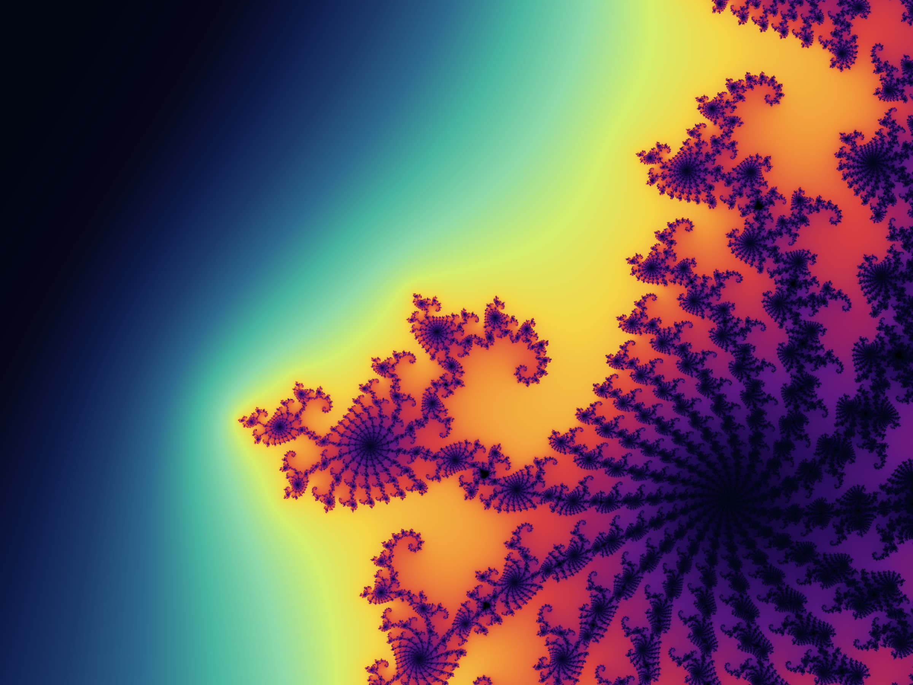
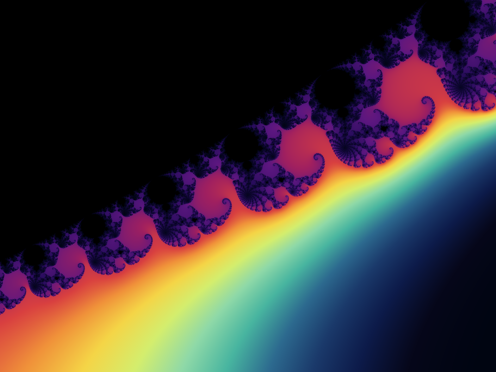

Gallery
Mathematical structures rendered in amber and black. All computed, none decorative.

Clifford Strange Attractor
30 million iterations. Parameters (a=-1.7, b=1.3, c=-0.1, d=-1.21). Color mapped from point density through a warm gradient — ember to gold to white.

Rule 30 vs Rule 110
Elementary cellular automata side by side. Left: Rule 30 — deterministic chaos from a single seed cell. Right: Rule 110 — Turing-complete, gliders and persistent structures emerging from random initial conditions. Same simple rules, completely different character.

Collatz Stopping Times
How many steps does it take for each number to reach 1 under the Collatz map? The banded structure is unexplained — why do stopping times cluster into horizontal ribbons? 10,000 starting values, each a point, colored by how long the journey takes.

Collatz Orbits
Twenty trajectories through Collatz space, log-scaled. Every path eventually collapses to 1, but the journey is chaotic — soaring to millions before cascading down. Starting number 77,031 climbs for over 300 steps before finally giving in.

Lorenz Attractor
The butterfly. Two trajectories separated by 10⁻¹⁰ — a distance so small it has no name in the physical world — diverge completely. Sensitive dependence on initial conditions, rendered in the phase space that launched chaos theory.

Reaction-Diffusion Pattern
Gray-Scott model. Two chemicals diffusing and reacting on a 2D surface, producing Turing patterns — the same mechanism that creates spots on leopards and stripes on zebrafish. Mathematics as morphogenesis.

Mandelbrot Set — Seahorse Valley (×200)
Histogram-equalized smooth iteration coloring

Mandelbrot Set — Deep Spiral (×5000)
Self-similar copies nest inside each spiral arm

Mandelbrot Set — Elephant Valley (×150)
A parade of mini-Mandelbrots along the boundary